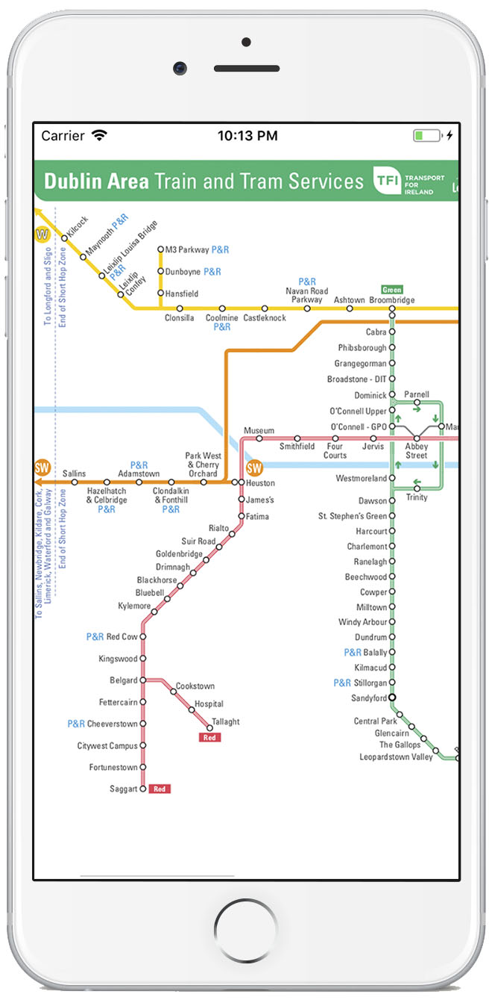
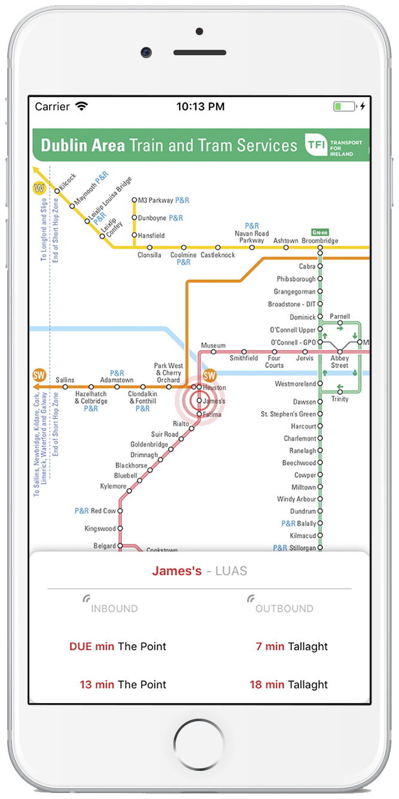
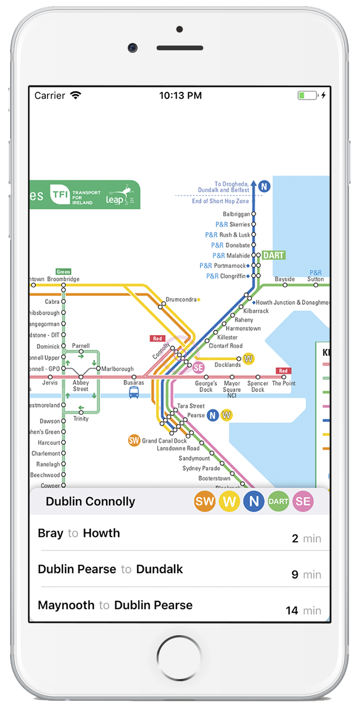

Dublin Tram and Trains Map
Visit and enjoy the beautiful city of Dublin with this app. Dublin Tram and Train Map will show you Luas, DART and Train stops and real-time information for each stop.
  
Features
- Shows Red and Green Luas lines
- Shows Train stops.
- South Eastern Commuter
- Northern Commuter
- Western Commuter
- South Western Commuter
- DART
- Real-time information for each stop
- Beautiful design
Download
Dublin Tram and Trains Map is available for free in the App Store. It requires internet access and contains no advertising or in-app purchases.
Dublin Tram and Train Map does not contain any analytics, in-app purchases or tracking of any kind. We take your privacy very seriously.
This app is not affiliated with or endorsed by TFI